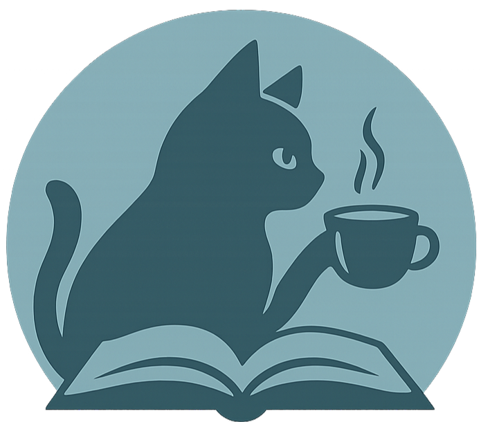
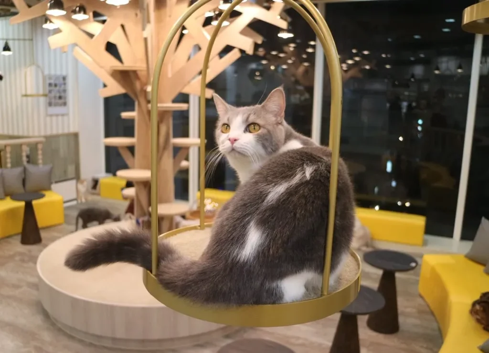
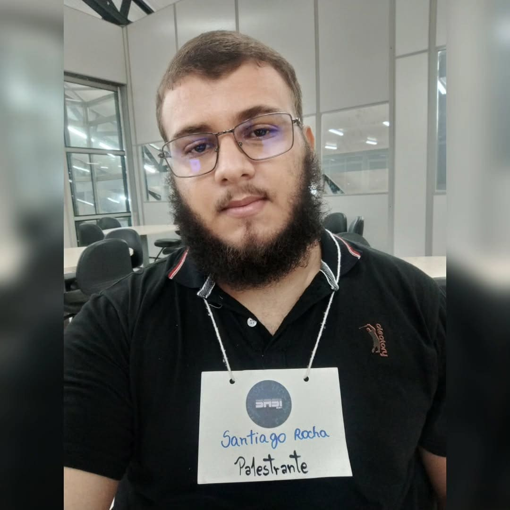

RAKUEN
GAFETERIA
Terapia Assistida por Animais (TAA)
A Epidemia Silenciosa
Nação Ansiosa
O Brasil possui a maior taxa de ansiedade do mundo (9,3%) e alta prevalência de depressão (5,8%). Há uma urgência nacional por acolhimento emocional. (OMS, 2017)
Esgotamento Local
Em 2023, a capital concentrou 69,5% das ocorrências de violência autoprovocada do Acre, evidenciando graves desafios locais de saúde mental. (SINAN/Sesacre, 2023)
Crise de Abandono
ONGs locais alertam para o número crescente de abandono animal. Faltam vitrines físicas de adoção que integrem os animais de forma ativa à sociedade.
A Sobrecarga Sensorial
A cidade cresce, mas faltam espaços com controle de estímulos (luz e ruído). Pessoas com TEA e TDAH sofrem com a sobrecarga de ambientes tradicionais.
A necessidade vital de refúgios
com Baixo Estímulo
O Refúgio Urbano
Um modelo disruptivo que transforma a experiência de um Neko Café em uma ferramenta ativa de prevenção à saúde mental.
Prevenção (TAA)
A mediação afetiva com gatos reduz clinicamente o cortisol temporal.
Cat Lounge Isolado
Ambiente rigorosamente higienizado e controlado para interação terapêutica segura.
Baixo Estímulo
Arquitetura antirruído focada em relaxamento profundo e descompressão sensorial.
Adoção Ética
Parceria ativa com ONGs locais para atuar como vitrine e combater o abandono animal.


Modelo de negócios
Gastronomia
Cafés artesanais de produtores locais e confeitaria temática.
Cat Lounge
Ingressos de acesso e tempo de convivência.
Eventos
Workshops, encontros terapêuticos guiados e programação cultural temática.
Merchandising
Produtos licenciados, ecológicos e artesanais.
Classificação do Revenue
B2C: Consumo direto do cliente no estabelecimento.
B2B: Venda de consultoria TAA para clínicas locais.
B2B2C: Venda de produtos licenciados através de parceiros e operações via plataformas de delivery.
Revenue Mix Previsto
Concorrentes
| Características | Cafeterias Tradicionais | Cafeterias Gourmet Temáticas |
Rakuen Gafeteria
|
|---|---|---|---|
| Produtos Artesanais e Gourmet |
|
||
| Experiência Temática e Sensorial |
|
||
| Atendimento Inclusivo |
|
||
| Terapia Assistida por Animais |
|
||
| Propósito Social |
|
Métricas-chave
80%
Intenção de visita (Pesquisa Local)
+45 min
Tempo médio de permanência estimado
R$ 55
Ticket Médio Projetado (Café + Cat Lounge)
Payback
Prazo de 12 meses para recuperação total do capital investido
Por que agora?
Crise Pós-Pandêmica
A busca por qualidade de vida e cuidado emocional nunca foi tão valorizada pela geração Y e Z, impulsionando a "Economia do Bem-Estar".
A Era Pet-Friendly
Famílias multiespécie são o novo padrão. Consumidores priorizam negócios que integram animais e promovem causas éticas de adoção.
Ascensão Neurodiversa
Aumento veloz de diagnósticos de TEA/TDAH em adultos gerando demanda por espaços sensoriais com baixo estímulo no mercado local.
Mercado
Avaliado em US$ 1.5 Bi
Segundo o Research Intelo, o Mercado Global de Neko Cafés cresce a uma taxa superior de 12% por ano e estima-se chegar em US$ 3,4 bilhões até 2033.
No Brasil 'alimentações fora do lar' movimentou R$ 241 Bilhões em 2025
Segundo dados de 2024/2025 do Euromonitor, existem mais de 74 mil cafeterias no Brasil e o setor movimenta impressionantes R$ 27 Bilhões anuais.
Nosso Foco Inicial
Milhares de universitários, neurodivergentes locais e famílias de Rio Branco, carentes de espaços de convivência especializados.
Time de Inovação
Rayele Aragão Silva
Sócia EmpresaAdministração (IFAC)
Idealizadora do plano de negócios. Agrega sólida vivência em atendimento ao público, marketing, estruturação financeira e gestão de hospitalidade.
Dayan Freitas Alves
Sócio EmpresaCiênc. da Comp. (UFAC)
Cursando Ciência da Computação, sólida formação em programação, BD e IA. Busca soluções inovadoras no setor.
Gabrielle de Souza
Parceiro de Desenv.Medicina Veterinária (UFAC)
Profissional com vivência clínica em felinos. Atua como responsável técnica assegurando rigoroso compliance sanitário e parcerias com ONGs.
Mayara Silva de Sousa
Parceiro de Desenv.Sist. de Informação (UFAC)
Focada em pesquisa tecnológica e inovação. Atua na inteligência do negócio, análise de dados e otimização dos processos operacionais.
Maria Clara de Souza Barroso
Parceiro de Desenv.Sis. de Informação (UFAC)
Especialista em dev web e UX/UI. Responsável por programar e integrar o ecossistema digital (aplicativo, PDV e reservas).

Santiago Rocha de Melo
Parceiro de Desenv.Sis. de Informação (UFAC)
Especialista em infraestrutura e segurança da informação. Garante escalabilidade e integração fluida dos sistemas.
Reinaldo Maia Siqueira
OrientadorMestrado (IFAC)
Economista e Coordenador da Incubac/IFAC. Especialista em microeconomia, modelagem de negócios, inovação e viabilidade econômica.
Próximos Passos
Lançamento do MVP
Pré aceleração, investimento inicial, pesquisa de campo e o Proof of Concept (PoC).
Breakeven
Atingir equilíbrio financeiro e conquistar mais de 700 clientes recorrentes.
Consolidação
Escalar a operação aos 1500 clientes e liderança regional.
Lançamento do MVP
Pré aceleração, investimento inicial, pesquisa de campo e PoC.
Breakeven
Equilíbrio financeiro e conquista de >700 clientes recorrentes.
Consolidação
Marca fantástica de >1500 clientes e liderança regional.